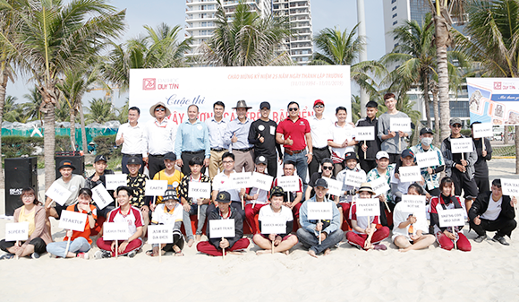

-

Hào hứng Chào đón Cuộc thi "Xây tượng cát trên bãi...
Góp phần đưa những hình ảnh đẹp về du lịch biển Đà Nẵng đến với người dân và du khách thập phương, làm phong phú thêm chuỗi các sự kiện của chương trình "Mùa du lịch biển Đà Nẵng 2022" đồng thời kêu gọi cộng đồng cùng chung tay bảo vệ môi trường biển đảo, Đại học Duy Tân phối hợp cùng Ban Quản lý Bán đảo Sơn Trà tiếp tục tổ chức Cuộc thi "Xây tượng cát trên bãi biển" năm 2022 với chủ đề "Sắc màu Đà Nẵng"...